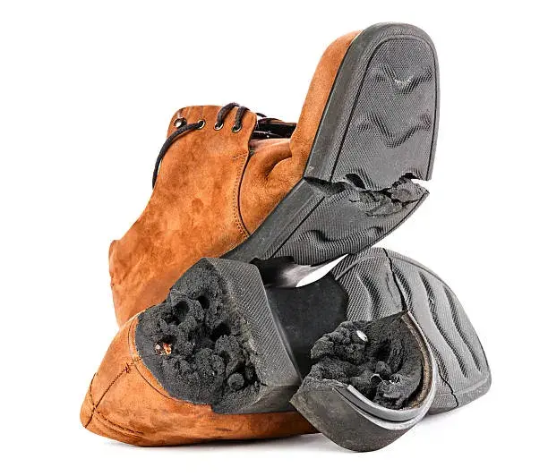

How Schault's Interlocking Sole Technology Works
Footwear is one of the most frequently replaced products in our daily lives. In most cases, people throw away an entire pair of shoes even when only the sole or the upper is damaged. At Schault, we believe there is a smarter and more sustainable footwear solution: interchangeable shoes built around replaceable shoe soles.
Our patented modular footwear system uses an innovative interlocking shoe technology that allows users to separate and replace the sole and upper without any tools, adhesives, or professional assistance. It's a simple, effective approach to shoe sole replacement that keeps your favorite pair going for longer. Browse our full Schault shoe collections to see the interlocking system in action.

What Is Schault's Interlocking Mechanism?
Schault shoes are designed with a specially engineered locking system that securely connects the upper and the sole. This mechanism keeps the shoe stable during everyday activities while allowing users to easily detach and replace components whenever needed.
Unlike traditional footwear that is permanently glued or stitched together, Schault shoes are built to be modular — giving you fully customizable shoes that adapt as your sole or upper wears down.
How to Remove the Sole
Removing the sole is simple and takes only a few seconds.
- Hold the shoe firmly.
- Start peeling the sole from the front section of the shoe.
- Continue separating the sole gradually until it is completely detached.
No Tools. No Glue. No Cobbler.
One of the biggest advantages of Schault footwear is convenience.
You don't need:
- Any tools
- Adhesives or glue
- A shoe repair shop
- A cobbler (mochi)
If your sole wears out after months of use, simply order a new sole and attach it to your existing upper. Similarly, if your upper gets damaged while the sole remains in good condition, you can keep and reuse it — that's the beauty of a reusable shoe upper.

Save Money by Replacing Only What You Need
Traditional footwear forces customers to purchase an entirely new pair even when only one component is worn out.
With Schault's modular design:
- Replace only the sole when the sole wears out.
- Keep using the component that is still in good condition.
This significantly reduces the overall cost of footwear ownership and helps consumers get more value from every purchase.
Build Your Own Shoes
Because the upper and the sole are fully independent components, Schault's interlocking system opens the door to something traditional shoemaking can't offer: true build your own shoes customization. Instead of choosing a single pre-made pair, you can mix and match uppers and soles to create a combination that fits your style, activity, and comfort preferences.
With our Build Your Own Shoes tool, you can:
- Select an upper in the color, material, or design you like.
- Pair it with a sole built for your needs — everyday wear, running, or rugged use.
- Swap either component later without rebuying the entire shoe.
It's the same interlocking mechanism described above, just put in your hands from the very first purchase. Ready to design your own pair? Start building your shoes here.
A Sustainable Solution for the Future
The fashion and footwear industries generate millions of tonnes of waste every year. A major reason is that shoes are discarded long before all their components have reached the end of their life.
Schault's interchangeable design addresses this problem by extending product life and reducing unnecessary disposal — a core part of what makes sustainable footwear and circular footwear possible at scale.
Environmental Benefits
Reduced Material Waste
Instead of discarding an entire shoe, users replace only the worn component. This drastically lowers material consumption and waste generation.
Lower Carbon Footprint
Manufacturing a complete new pair of shoes requires more raw materials, energy, and transportation. Replacing only a sole or upper reduces the overall environmental impact.
Supports Circular Consumption
By maximizing the usable life of every component, Schault promotes a more circular and responsible approach to footwear ownership — the foundation of truly eco-friendly shoes.
Frequently Asked Questions
Can I replace the sole myself?
Yes. The interlocking mechanism is designed for easy user replacement without any tools or professional assistance.
Do I need glue to attach a new sole?
No. The sole securely locks into the upper using Schault's interlocking technology.
Which side should I peel from while removing the sole?
Always start from the front of the shoe. This ensures smooth disengagement of the locking mechanism.
Can I buy soles and uppers separately?
Yes. Schault allows customers to purchase compatible soles and uppers individually, depending on which component needs replacement.
Why is modular footwear more sustainable?
Modular footwear reduces waste, lowers material consumption, extends product lifespan, and decreases the environmental impact associated with replacing entire shoes.
Can I design and build my own Schault shoes?
Yes. Our Build Your Own Shoes tool lets you mix and match uppers and soles to create a fully custom pair suited to your style and needs.
The Future of Footwear Is Modular
At Schault, we are reimagining footwear through innovation, sustainability, and affordability. Our interlocking sole technology empowers consumers to customize, repair, and extend the life of their shoes in a way that traditional footwear simply cannot — one more step toward mainstream modular footwear and interchangeable shoes for everyone.
Why replace an entire shoe when you only need to replace one part?
Switch your sole. Keep your style. Reduce waste. Ready to try it? Build your own shoes or shop our full collections.
#SwitchYourStyle